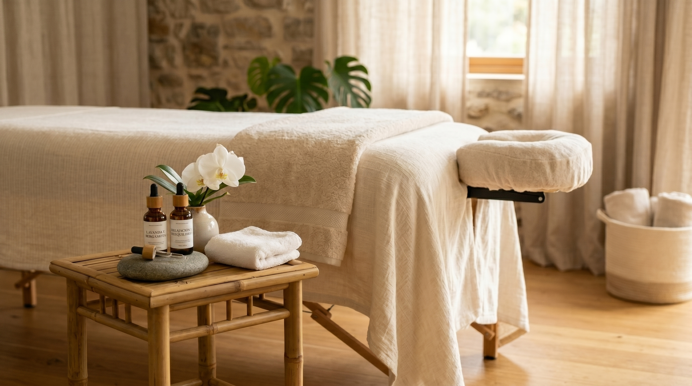
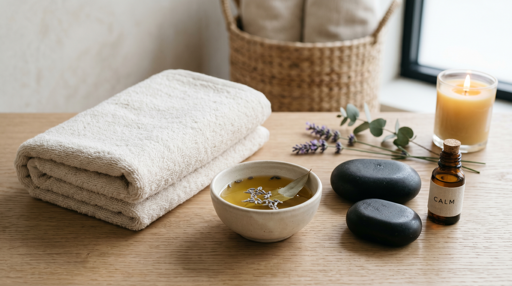

Beneficios del Cuidado Corporal
Nuestras terapias manuales no solo alivian dolores puntuales; son un ritual de renovación integral para restablecer la armonía entre tu cuerpo y tu mente.
Alivio Físico Profundo
El estrés cotidiano y las malas posturas se acumulan en forma de rigidez, reduciendo tu rango de movimiento y generando dolor crónico. A través de la masoterapia liberamos las tensiones musculares profundas y mejoramos la oxigenación celular.
El resultado es una sensación inmediata de ligereza y una mejora en tu flexibilidad articular, permitiéndote encarar tus días con mayor libertad y energía.


Desintoxicación y Circulación
El drenaje linfático manual estimula suavemente el sistema inmunitario y optimiza la remoción de toxinas y líquidos acumulados en los tejidos. Esta técnica promueve la regeneración celular y fortalece tus defensas naturales.
Es ideal para aliviar la hinchazón de piernas, mejorar la apariencia de la piel (celulitis) y acelerar los procesos de recuperación postoperatoria.
Reducción del Estrés y Ansiedad
En un mundo hiperconectado, el silencio y la quietud se han convertido en un verdadero lujo. Nuestras sesiones de masaje relajante disminuyen la producción de cortisol, permitiendo que tu sistema nervioso entre en un estado de descanso profundo.
Esta desaceleración consciente induce una mejor calidad de sueño, apacigua los pensamientos rumiativos y favorece un estado mental de paz y foco renovado.

¿Listo para priorizar tu salud?
Date el permiso de desconectar del exterior y reconectar con tus necesidades. Tu bienestar es la inversión más valiosa de tu día.